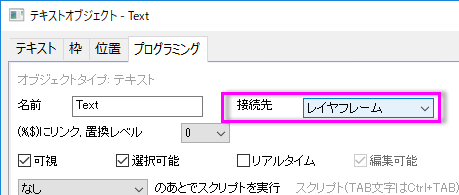

FAQ-953 なぜレイヤサイズを変更すると、テキストオブジェクトの位置が変更されるのでしょうか。
最終更新: 2018/06/28
テキストオブジェクトはデフォルトではレイヤに帰属しており、テキストの位置はレイヤのサイズや位置によって変化します。これは、位置やサイズが変更されても、レイヤを見やすくするためのものです。レイヤサイズを変更したときに、テキストの位置が変更された場合、
- テキストオブジェクトを右クリックして、ショートカットメニューからプロパティを選択します。
- テキストオブジェクトダイアログで、プログラミングタブ.をアクティブにします。
- 接続先のドロップダウンリストにページが選ばれていることを確認してください。確認ができたら、これをレイヤフレームまたはレイヤとスケールに変更します。
- 
キーワード：オブジェクトの位置, 相対的な位置, レイヤサイズの変更, 位置の変更